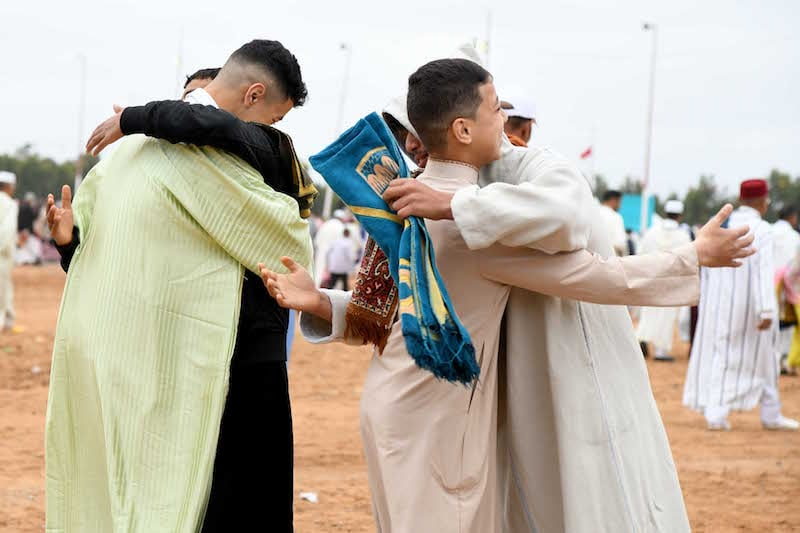
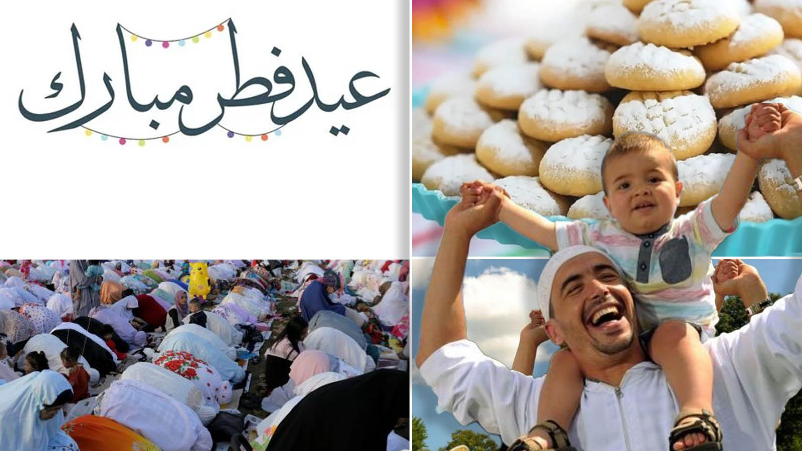
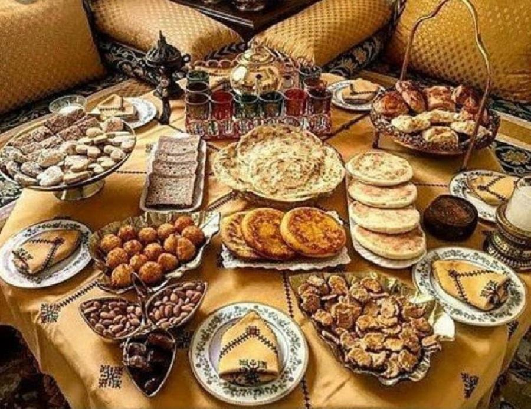

Eid al-Fitr, also known as the "Festival of Breaking the Fast," is one of the two major Islamic holidays celebrated worldwide. It marks the end of Ramadan, a month of fasting from dawn to sunset, spiritual reflection, and self-discipline.
The festival is not only a religious observance but also a time for social gatherings, family celebrations, and festive meals. Muslims come together to rejoice after a month of fasting and devotion.
Eid al-Fitr emphasizes gratitude, compassion, and community. It reminds Muslims to be thankful for their blessings and to help those in need.
One of the main practices of Eid is giving Zakat al-Fitr, a mandatory charity for the poor, ensuring that everyone can participate in the festivities.
Eid al-Fitr begins on the first day of Shawwal, the tenth month of the Islamic lunar calendar. The exact date depends on the sighting of the crescent moon, which may vary across countries.
The celebrations last one to three days, featuring prayers, feasts, and community gatherings. The night before Eid, known as Chand Raat, is full of preparation, shopping, and decorating homes.
A key part of Eid is the Eid prayer, performed in large congregations at mosques or open spaces. The prayer consists of two units (rakats) with additional Takbirs and a sermon (khutbah).
After the prayers, Muslims greet each other with "Eid Mubarak" and visit family and friends. Sharing food, gifts, and sweets is an essential part of the celebration.
Homes are decorated with lights, flowers, and ornaments, and special meals are prepared, including sweet dishes like dates, pastries, and regional delicacies.
Eid al-Fitr is celebrated differently around the world. In Indonesia, large parades and performances highlight the festive spirit.
In Morocco, families prepare traditional dishes such as Seffa and Chebakia, and children receive gifts or money called Eidi.
In the Maldives, decorations and communal prayers create a festive atmosphere for the entire community, emphasizing unity and gratitude.
Eid al-Fitr is a time of joy, reflection, and gratitude. It strengthens spiritual and social bonds, encouraging compassion, forgiveness, and generosity.
Through prayers, charity, festive meals, and family gatherings, Muslims worldwide celebrate Eid al-Fitr, sharing the blessings and joy of this special festival.